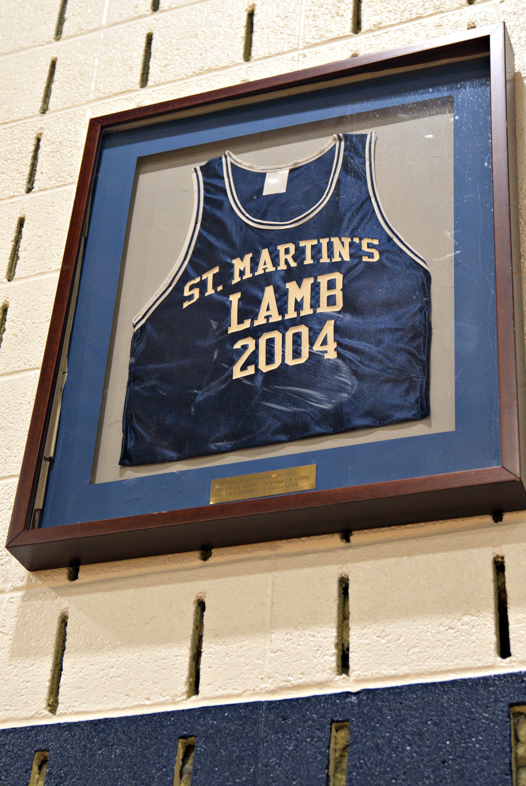
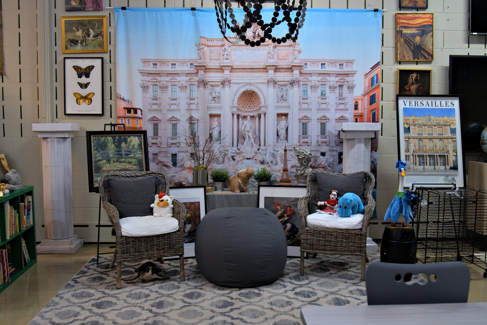

Rooted in faith, growing in excellence since 1963
A school built on faith, family, and academic excellence
Saint Martin's has spent over 60 years growing students in mind and spirit. We're a PreK–8 Lutheran school in the heart of Annapolis, where small class sizes and big faith go hand in hand.

What guides us, every day
Everything at Saint Martin's flows from our mission and vision, faith and learning, growing together.
A welcoming community focused on your child's success
Saint Martin's is a place where every student is known, encouraged, and challenged, in the classroom and in their faith.
Faith woven into daily life
Chapel, scripture, and prayer are part of every school day.
Experienced, caring faculty
Teachers who bring both expertise and heart.
Focus on values
Nurturing integrity, respect, and responsibility.
Strong academic foundation
Rigorous instruction that prepares students for high school and beyond.
Discover Saint Martin's from anywhere

Growing in faith since 1963
- 1963
Saint Martin's Lutheran School opens its doors in Annapolis.
- Milestone to come
Building expansion, accreditation, or a leadership change.
- Milestone to come
Pulled from the old About page if the history exists.
- Milestone to come
A recent anniversary or milestone.
Mentors beyond the classroom
Our faculty brings both expertise and heart, guiding students in mind and in faith.
Where faith, learning, and childhood come together
Clubs and activities
Students explore interests and build friendships outside the classroom.

Bulldog spirit
Athletics build teamwork, discipline, and confidence.

Creativity and the arts
Music, art, and imagination have a place here too.